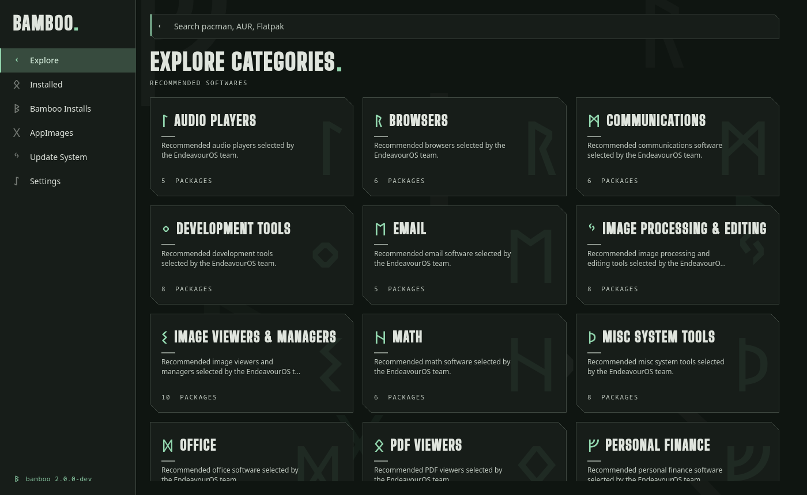
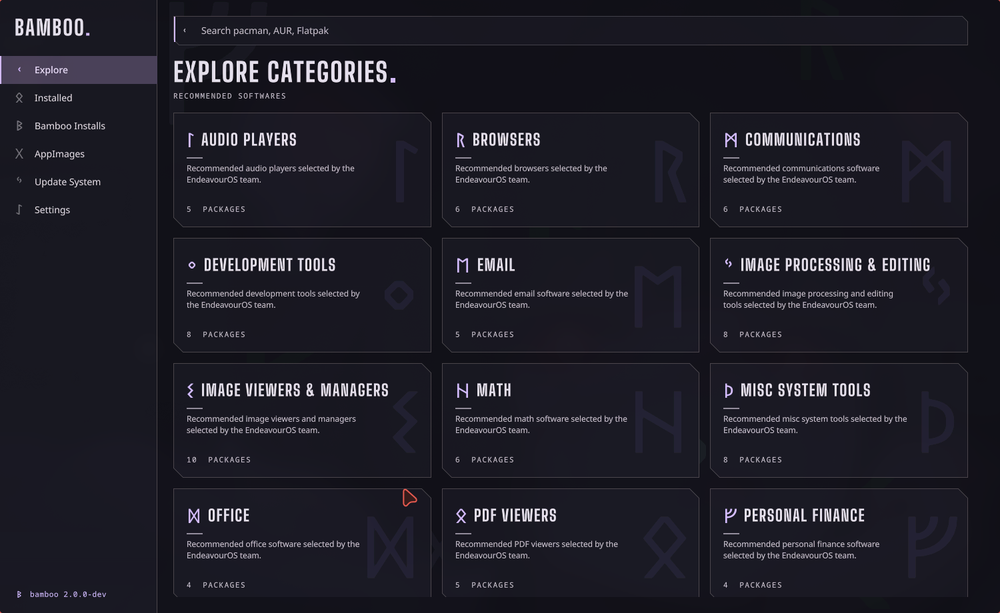

ᛊ
One search, three sources
Official repos, the AUR and Flatpak together, filtered by repository and sorted, with counts and pagination.
ᛊA storefront for people who live in a shell. Search pacman, the AUR, Flatpak and AppImages in one place, then see the exact command behind every button before anything runs.
Bamboo never hides what it does. Pressing Install opens a visible terminal and runs the same line you see in the details, with a copy button. Prefer your own shell? Copy it and go.
yay -S bamboo-end-storeparu -S bamboo-end-storesudo pacman -S firefoxyay -S spotifyparu -S spotifyflatpak install flathub org.gimp.GIMPeos-updateThe app only watches the exit code. Close the terminal and the job ends; nothing keeps running behind your back.
Official repos, the AUR and Flatpak together, filtered by repository and sorted, with counts and pagination.
ᛊDescription, sizes, license, screenshots in a full-window viewer, AUR comments, and the exact command first.
ᚲSteam, WinBoat, Linux Toys and DaVinci Resolve with their extra setup scripts (multilib, Wine, 32-bit libraries).
ᛒAdd by picker or drag and drop, integrate into the menu with a .desktop entry and icon, launch and remove.
ᚷThe EndeavourOS quickstart picks, each with a rune. Installed packages from pacman, AUR and Flatpak in a single list.
ᛁA Qt/QML interface over a Rust core. Fast start, no browser engine, four languages: English, Portuguese, Spanish and Russian.
ᛚThe look comes from Galdr: Elder Futhark runes as icons, 45 degree cuts, hairlines instead of shadows, and slow diagonal wipes. Motion can be turned off.

Try them: the swatches in the top bar re-theme this page, and the screenshot follows.

Version 2 is a rewrite. Prefer the AUR (yay or paru, above). To build it yourself on Arch or EndeavourOS:
sudo pacman -S --needed base-devel rust qt6-base qt6-declarative qt6-svg qt6-waylandgit clone https://github.com/satodu/bamboo-end-store.git && cd bamboo-end-store && ./run.sh --releaseThe first source build takes a few minutes. ./run.sh --clean starts with throwaway settings. The old 1.x app (Laravel and Electron) is kept under the tag v1.4.2-php.